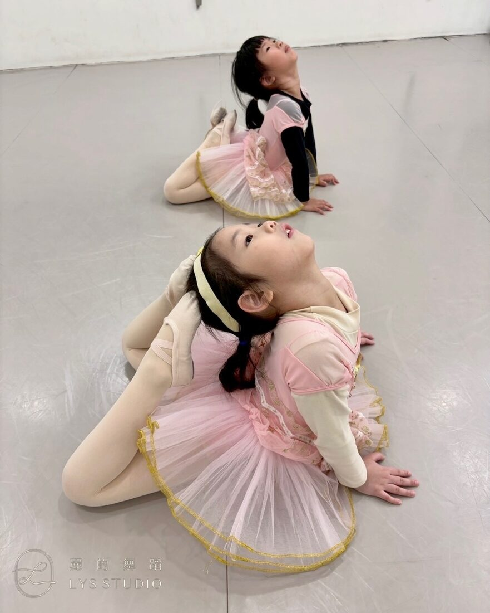
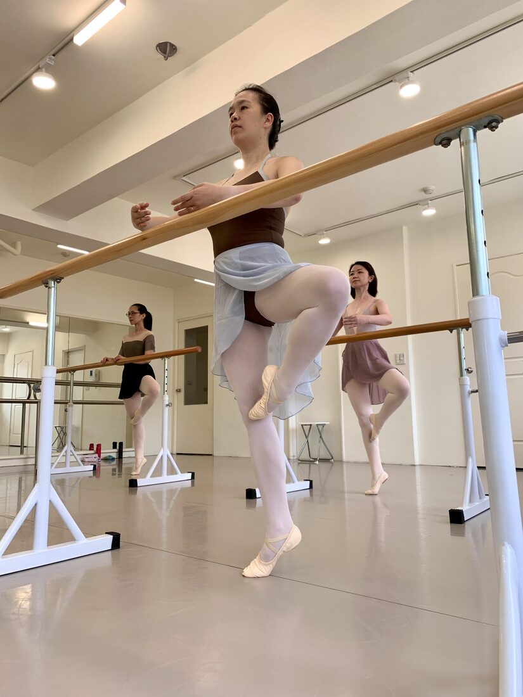
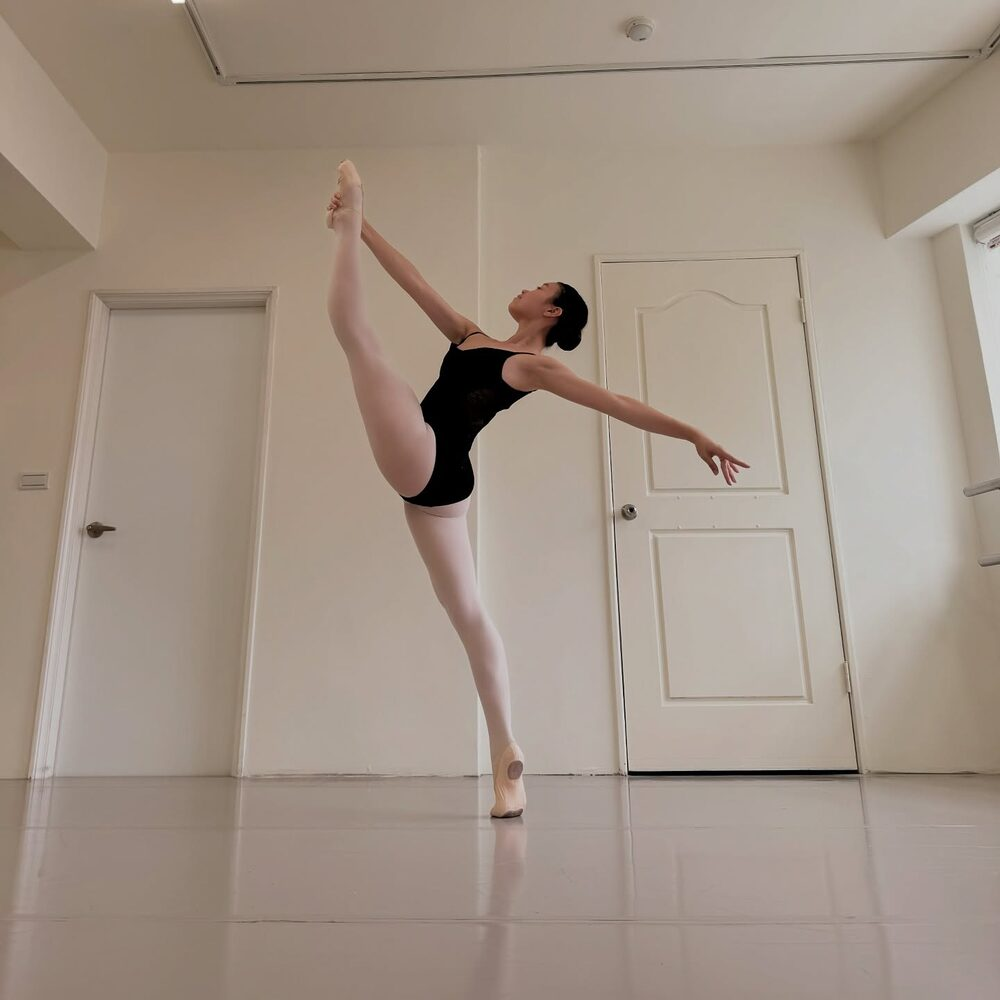
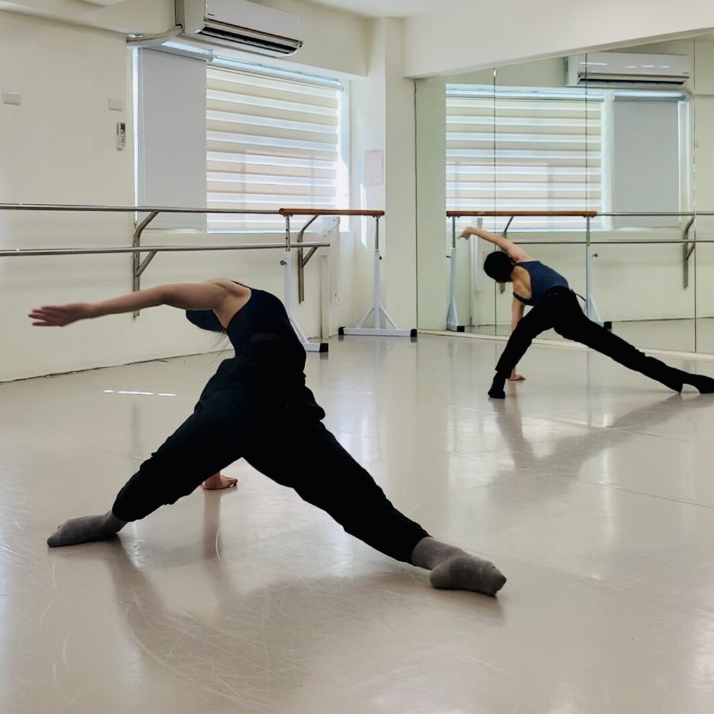
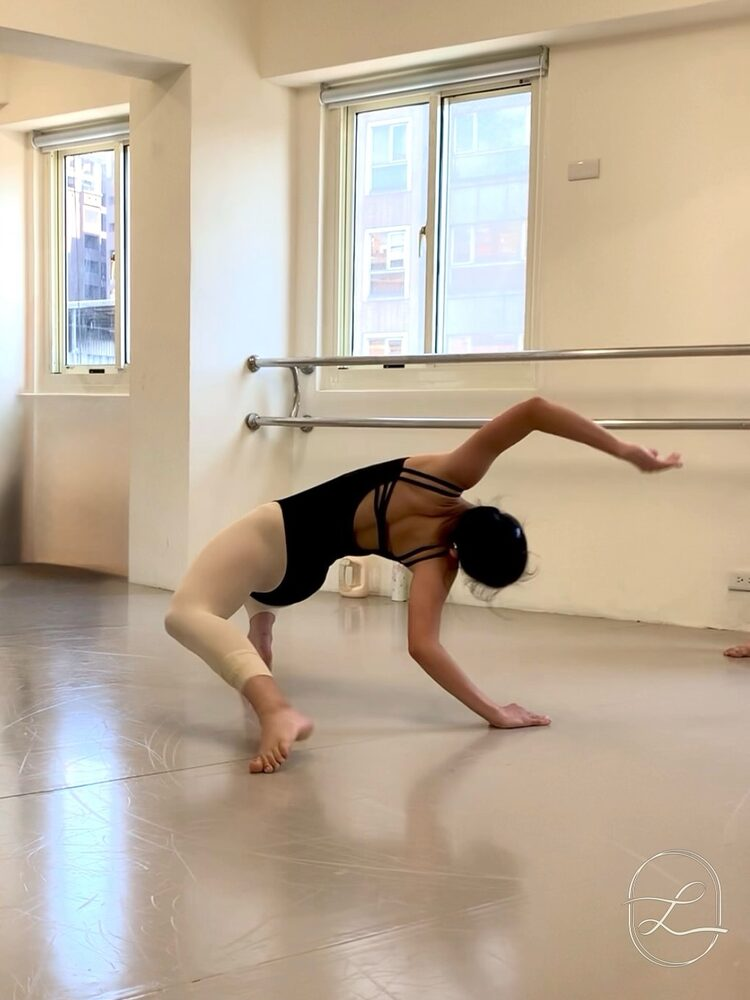
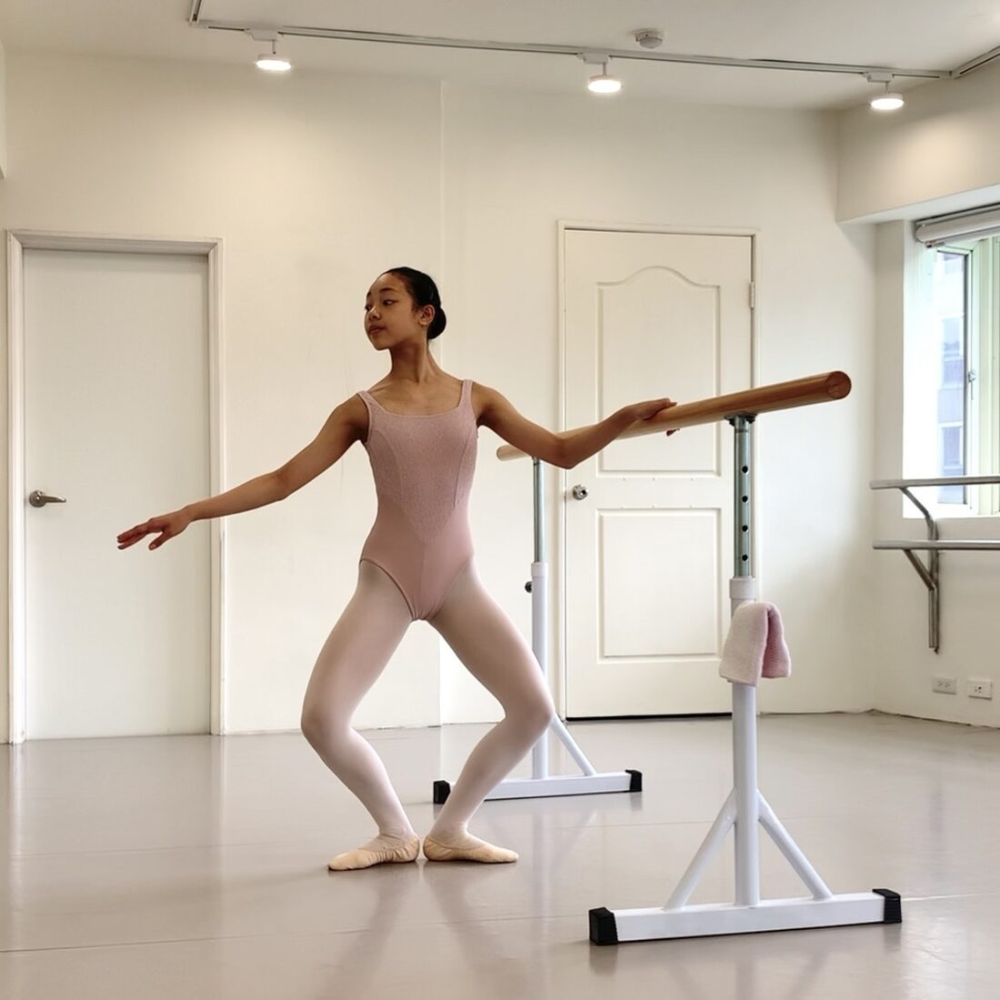

從 3 歲到成人，從零基礎到專業培訓，LYS Studio 提供完整的舞蹈學習路徑。 以下課程時段供參考，實際開課與費用歡迎透過 LINE ＠506hywat 洽詢。

幼兒時期是孩子動作發展的黃金時期。從學會站立、轉動、優雅地舉起雙手開始， 舞蹈悄悄培養孩子的專注力、美感與肢體協調。這個階段，舞蹈是一種「嘗試」與「靠近」—— 一點一點認識自己的身體，一點一點建立自信。
⏱ 兒童芭蕾（6 歲以上）週一 16:30–17:30 ／ 幼兒啟蒙芭蕾（3–6 歲）週四 18:45–19:25
屬於大人的芭蕾課。無論過去是否學過舞蹈，成人芭蕾都為你開啟全新的體驗—— 不只是動作的學習，更是一次重新認識身體的旅程。從基礎站姿到立起足尖， 在優雅的延展與線條裡，慢慢找回平衡、肌力與屬於自己的從容自信。
⏱ 每週日 基礎班 10:00–11:00 ／ 入門班 11:00–12:00


重視基本功的建立，培養穩定核心與身體控制， 扎實累積技巧，發展優雅的舞蹈能力。
⏱ 每週六 10:00–12:00 ・ 芭蕾硬鞋 12:00–13:00 ・ 另有個人課
地板不再只是支撐我們的平面，而是舞蹈的夥伴。當代的地板訓練，很像重新把身體打開—— 重新感覺地面、感覺重量、與地心引力對話。當代課最難的常常不是記動作，而是學會「感受」： 感受重量往哪裡走、感受呼吸如何帶動身體。由資深職業舞者帶領，另不定期開設專業當代工作坊。
⏱ 中階 每週六 13:00–14:30 ・ 另不定期工作坊


舞蹈升學的路，不只是技巧的疊加，更是在準備身體的同時，一併磨練心志。 週日的加強班——我們一起練基本功，也練臨場的勇氣與專注， 把每一次的準備，累積成走向舞台的底氣。
⏱ 每週日 09:00–14:00
個人課與比賽編舞依目標量身規劃，讓每一次調整都更精準，陪你一步步把粗糙修成細緻。 另設有東方舞蹈、當代小品等多元課程。
⏱ 採預約制 ・ 歡迎私訊洽詢
